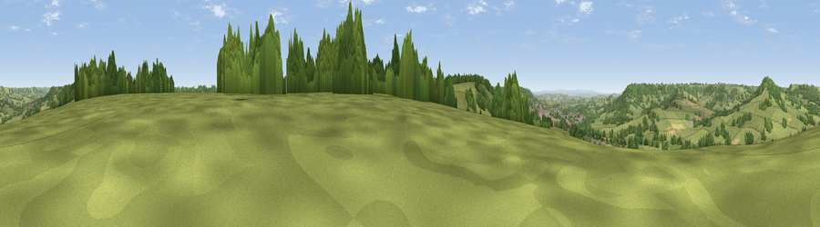

Viewpoint near Monkton
#21955 in England · top 47% of its area beats it · near MonktonWhere it is
The exact computed spot (ST 18575 01675). Click the marker for map links.
The view, rendered

A 360° render of this exact spot computed from the terrain model, tree cover and land cover — summer colours, afternoon light, calibrated against photographs of famous viewpoints. Real trees, hedges and buildings will differ in detail.
The panorama
Grey silhouette: terrain skyline in each direction (720 bearings, Earth curvature and refraction included). Dashed green: skyline with trees (+15 m) and buildings (+8 m) as obstacles. Blue strip: how far the ground is visible on each bearing.
Where the view opens
Wedge length = distance to the farthest visible ground on that bearing (vegetation-aware). Rings at 10, 25 and 50 km.
What fills the view
70% grassland · 17% woodland · 10% cropland · 2% built-up
Angular shares of the visible panorama (visual magnitude), not map area. Landscape diversity 0.38 (0–1 Shannon).
Key numbers
More beautiful places nearby
The staircase of upgrades: each row has a higher view potential than everything closer. Driving times are estimates from straight-line distance, calibrated against real road routing — check an actual route before setting out.
| Place | Direction | Drive | Score |
|---|---|---|---|
| Viewpoint near Honiton | SSW · 2 km | ~5 min | 56.2 |
| Viewpoint near Beacon | NNW · 2 km | ~6 min | 63.1 |
| Widworthy Hill | SE · 4 km | ~10 min | 64.6 |
| Viewpoint near Gittisham | SW · 5 km | ~11 min | 64.8 |
| Viewpoint near Gittisham | SW · 7 km | ~15 min | 68.2 |
| Hembury | W · 7 km | ~15 min | 75.9 |
| Viewpoint near Tipton St John | SW · 13 km | ~24 min | 81.5 |
| Viewpoint near Axmouth | SE · 16 km | ~28 min | 82.4 |
50.80888, -3.15701 · source: screening · position refined by local search. Computed location — check access rights before visiting.